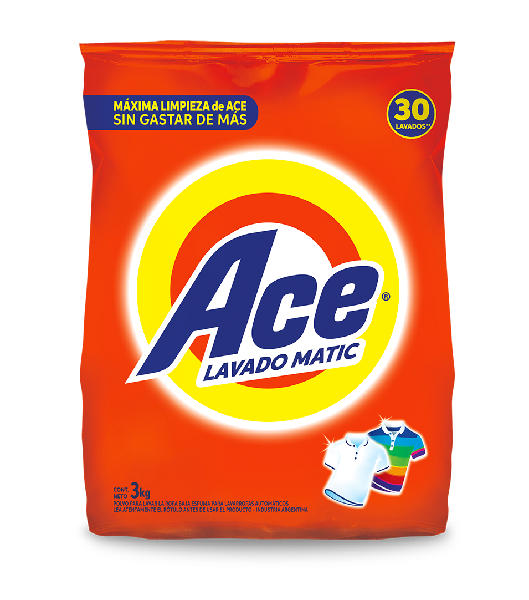

ACE Detergente en Polvo
Tamaño: 3Kg
Máxima remoción de manchas con tensioactivos biodegradables. Ideal para lavarropas automáticos y lavado a mano.
Características principales:
- Enzimas quitamanchas
- Agentes reguladores de espuma
- Ablandadores de agua
- Abrillantadores ópticos